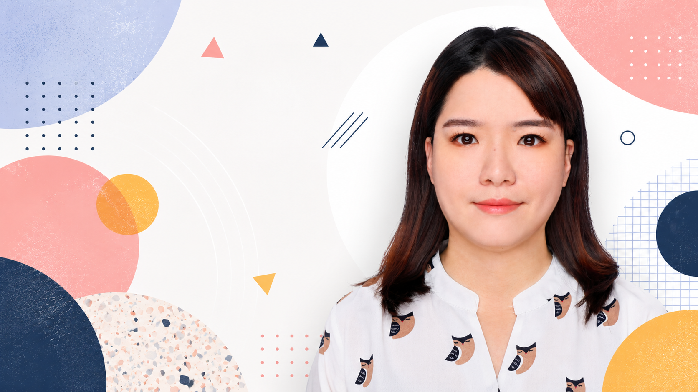
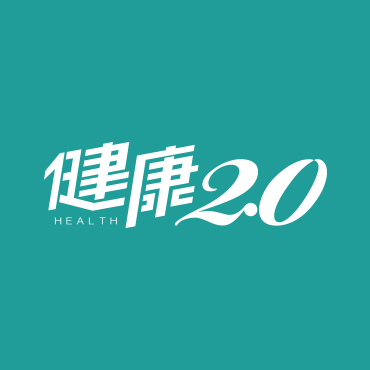
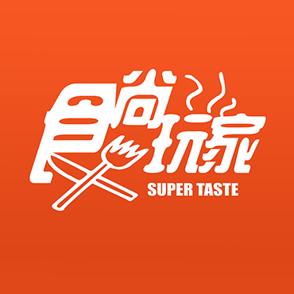
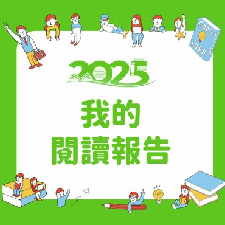
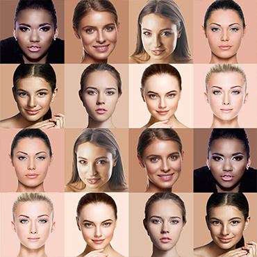
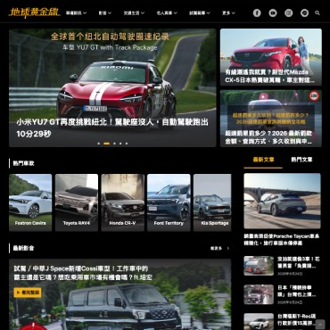
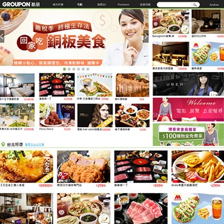
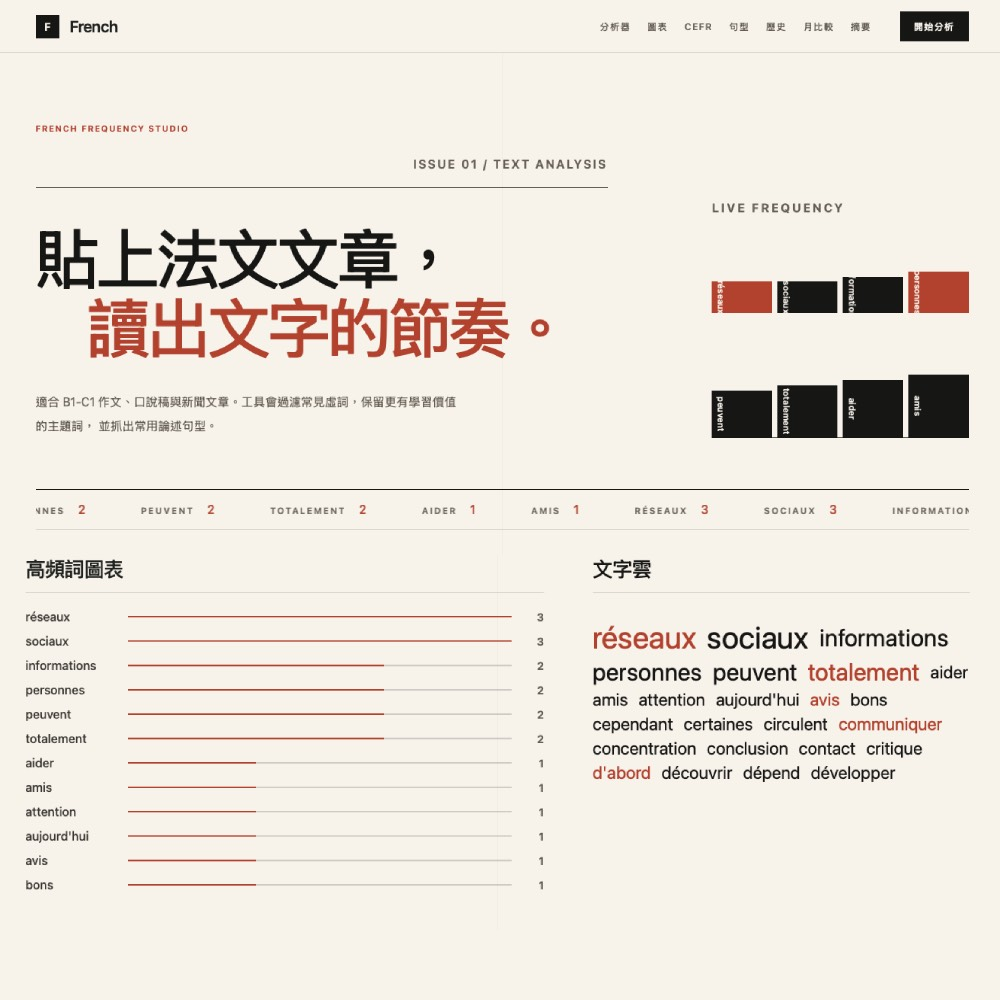
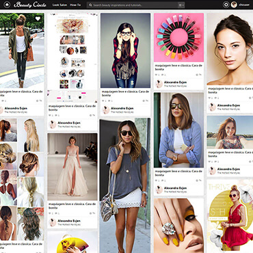

01
UX Research & Strategy
需求訪談、競品分析、persona、使用者訪談與易用性測試，讓產品方向先對焦。

I design digital products, campaign sites, ecommerce flows and responsive interfaces that balance visual craft, user insight and practical implementation.
將需求訪談、使用者洞察、介面流程、視覺設計與 RWD 切版串成一個清楚可交付的工作流程。
需求訪談、競品分析、persona、使用者訪談與易用性測試，讓產品方向先對焦。
User story、wireframe、風格提案、介面設計，從結構到視覺一致推進。
Guideline、元件切圖、介面標註、HTML/CSS/RWD 切版，降低工程溝通成本。
依照 Scrape template 的作品網格節奏，整理出跨媒體、電商、美妝、新聞與工具型產品的代表案例。

健康內容平台網站改版，重整內容閱讀與行動裝置體驗。

美食旅遊內容 App UI，結合探索、收藏與行程資訊。

以資料故事與活動視覺提升使用者回顧體驗。

AR / AI 美妝科技服務頁、品牌頁與動畫視覺更新。
分群招募、質性訪談、易用性測試與洞察整理。

汽車頻道內容架構、新聞導流與專題活動視覺。

團購網站與 App UI，聚焦商品瀏覽、分類與購買流程。

適合 B1-C1 作文、口說稿與新聞文章。工具會過濾常見虛詞，保留更有學習價值的主題詞， 並抓出常用句型。

美妝社群網站設計與 HTML/CSS 頁面實作。
I graduated from National Taiwan University of Arts, majoring in Visual Communication Design. I have worked across ecommerce, social media, beauty tech, media platforms and campaign websites.
我擅長 UI/UX 設計、CSS / HTML / RWD 切版，並在商業目標、使用者體驗、資料洞察與工程可行性之間找到平衡。
以舊站三個能力區塊為基礎，重新整理為更容易閱讀的服務流程。
透過需求訪談、競品分析、persona 與 growth mindset，確認問題與專案方向。
建立 user story、wireframe、設計風格與互動流程，快速對齊團隊共識。
交付 guideline、元件切圖、標註與前端實作，協助工程與 PO 驗收落地。
延續參考頁 Blog 區塊，改為能呈現專業觀點的短文入口。
從使用者回饋、行為資料與商業目標之間，整理可執行的設計決策。
行動裝置上的資訊密度、觸控區域與視覺層級，需要在設計初期一起思考。
明確元件狀態、標註規則與例外情境，能大幅降低後續溝通成本。
If you need UI/UX design, website redesign, responsive frontend, campaign page or product flow review, feel free to contact me.